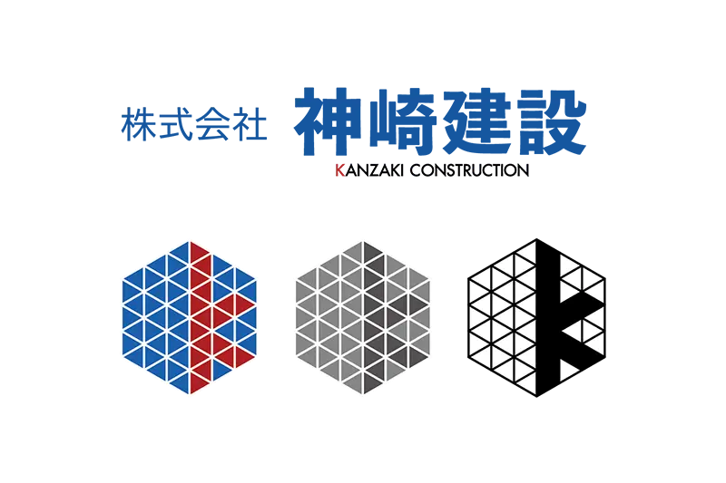
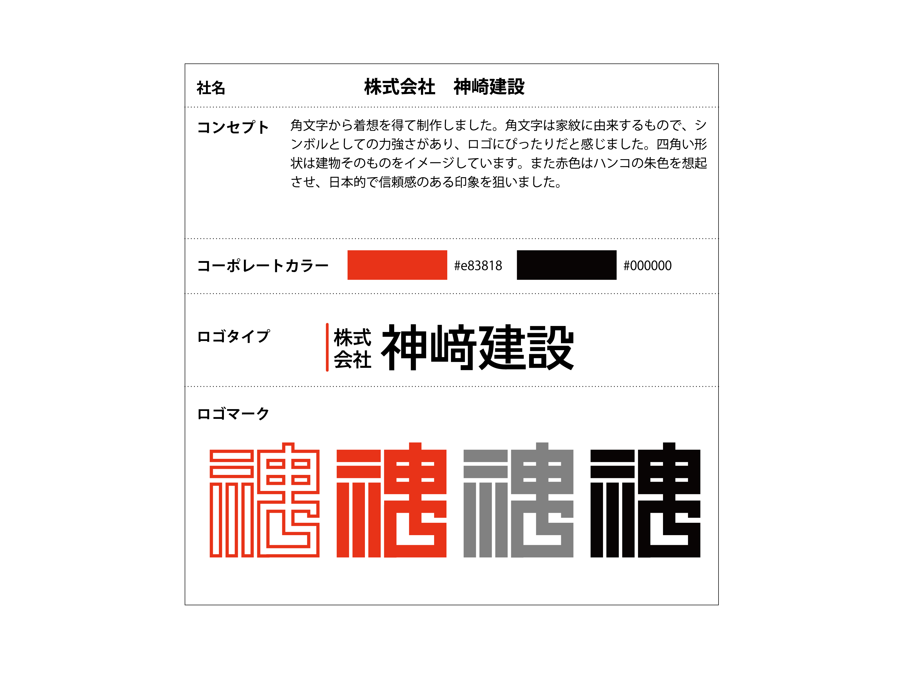
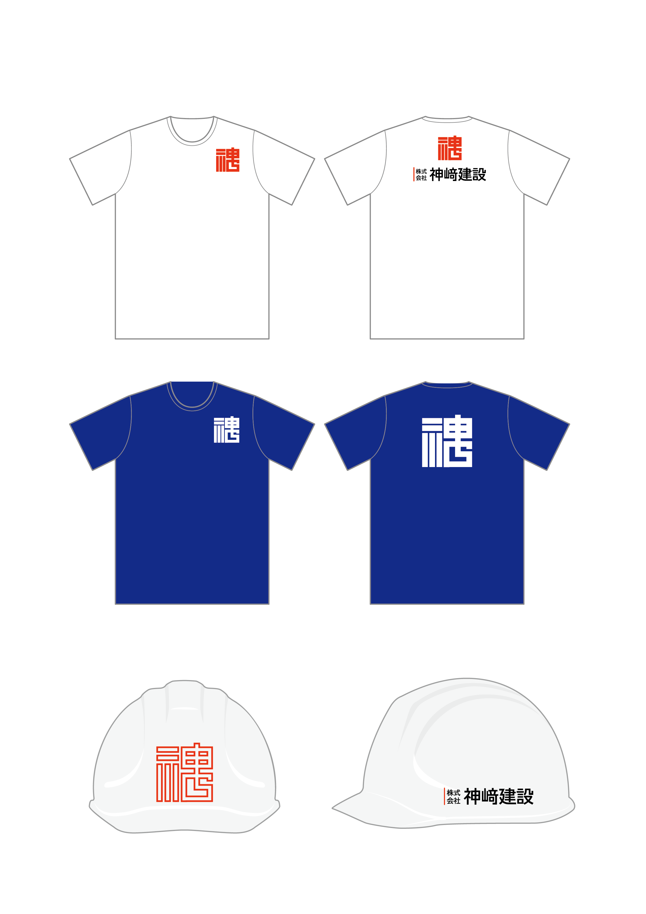
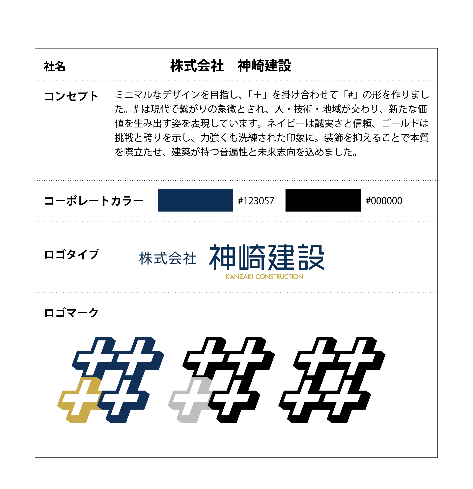
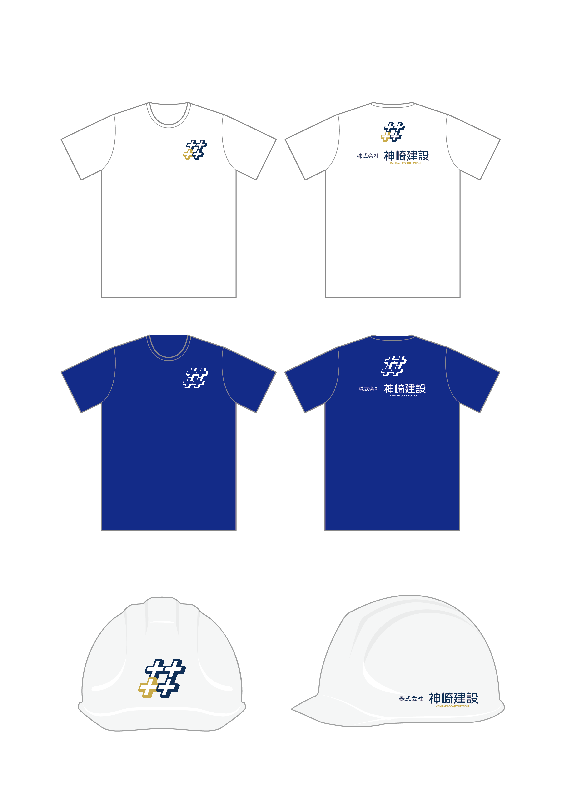
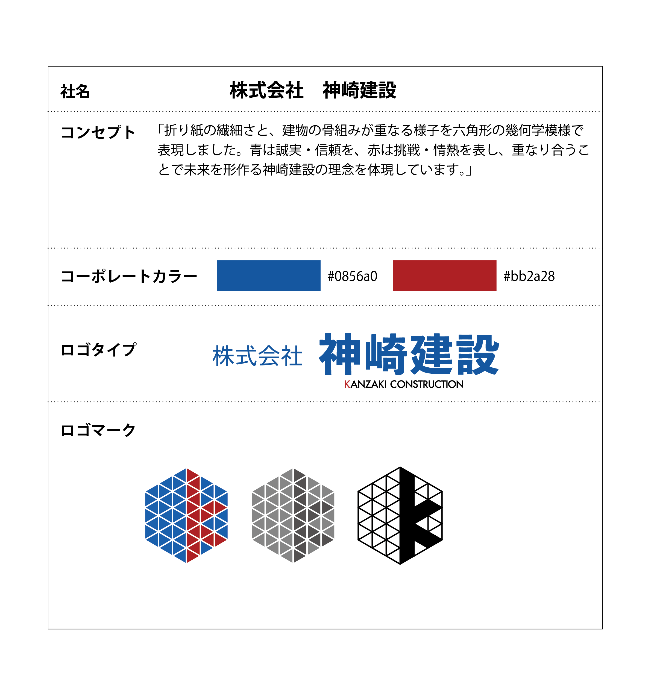
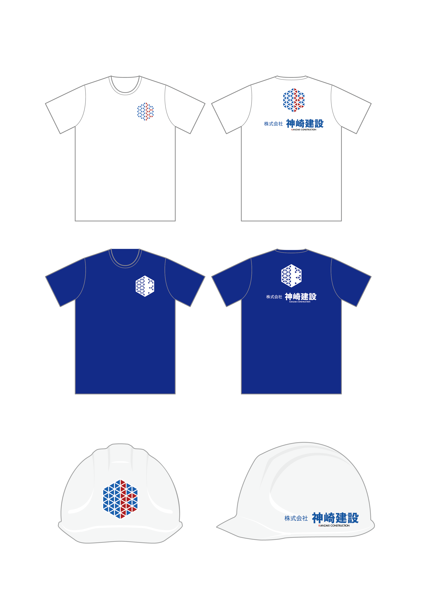

Works — Logo
架空の建設会社 ロゴ制作
株式会社神崎建設のCIデザインを、コンセプトの異なる3案で提案。ブランドの方向性を提示しました。

Purpose制作の目的
企業の信頼性や堅牢さ、現代性と拡張性を伝えることを目的に、株式会社神崎建設のCIデザインを3案提案しました。伝統的な「角文字」、繋がりを象徴する「＃」、構造美をモチーフにした「折り紙」という、方向性の異なる3つのコンセプトで展開しています。
コーポレートカラーは1〜2色に絞り、モノクロやグレースケールでも視認性が保たれるよう設計。名刺・ヘルメット・Tシャツなど実際の使用場面も想定し、CMYKモードで制作しました。線幅や縮小時の視認性、ロゴマークとロゴタイプのバランス・展開性に配慮し、企業ブランディング・デザイン思考・実用性の3点を軸に構成しています。
Variations3つの提案
A案 — 角文字


伝統と構造の力強さを、シンプルな造形で表現。家紋にも用いられる「角文字」をモチーフに、建設業に求められる堅牢さと信頼感を表しました。四角い文字組みは建物の構造を連想させ、赤色はハンコの朱色から着想を得た日本的なアクセント。線と塗りの2バリエーションを用意し、用途に応じて最適な視認性と印象が得られるよう設計しています。
B案 — ＃（つながり）


“繋がり”をテーマに、現代性と普遍性を両立したデザイン。プラス記号を組み合わせた「＃」の形に、人・技術・地域が交差する企業の在り方を込めました。ネイビーとゴールドのカラーリングで誠実さと挑戦心を象徴し、無駄を削ぎ落としたミニマルな造形により、SNSから印刷物まで幅広い展開に対応できる柔軟性を備えています。
C案 — 折り紙


構造美と創造性を融合した、幾何学的なCI表現。日本文化の折り紙と建物の骨組みに共通する“折る・組む”を掛け合わせ、六角形の幾何学構造でビジュアル化しました。青と赤の配色で信頼と挑戦の精神を重ね、複雑さと整然さを両立させた造形により、企業の革新性と技術力を印象づけるデザインとしています。
この作品の制作意図や工夫について、詳しくお話しできます。お気軽にご連絡ください。
お問い合わせ